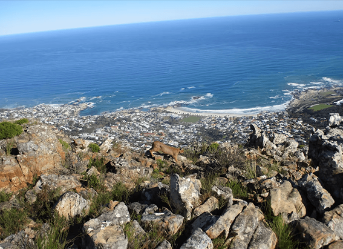

NATIONAL GEOGRAPHIC
China’s beloved drunken poet died centuries ago or did he
HISTORY & CULTURE
Born in 701, Li Bai famously began composing verse at age 10, trained as master swordsman in his teens (fatally dispatching several opponents in duels), and spent much of his Byronic life wandering the Chinese countryside seeking, with indifferent success, employment in various royal courts. He married multiple times. Inspired drunkenness became so vital to his literary method that he was inducted into a sodden group of Tang Dynasty scholars called the Eight Immortals of the Wine Cup." About a thousand of Li Bai’s poems survive still. They dazzle experts and Instagrammers alike with their striking imagery and doomed nostalgia. Hundreds of millions of Chinese schoolchildren memorize Li Bai’s stanzas unto this day. According to legend, the great bard perished, drowned at age 62, while tipsily trying to touch the moon’s reflection in the Yangtze River.
“I’m confident of this,” said Li Hong Bin, hunched in a derelict souvenir kiosk that he’s restored as a hermit’s hut at the Li Bai Cultural Center, in Qinglian, the great poet’s childhood town in China’s western Sichuan province. “After 1,300 years, I’m the only poet living in Li Bai’s hometown who is still composing poetry. I even sign my work Li Bai.”
Li Hong Bin slapped a hank of rice paper onto his makeshift table. With barely suppressed emotion, he inked a line of calligraphy to fit the moment: “Be willing to give up everything—Buddha.”
He’d exchanged home, family, friends, and job to pursue his muse in a seven-foot by seven-foot booth next to a concrete parking lot in a town of strangers. He eked out his groceries by selling “maybe not so perfect” samples of calligraphy to tourist guesthouses. The guesthouse owners indulged him, with a grin, as “our own Li Bai.”
I’m walking across the world. Traversing continents afoot, it’s impossible not to cartwheel into poetry everywhere.
You can hear it in the songs of the Afar camel-men in desert Ethiopia. You see it in the quick finger clasps of lovers strolling blue-tiled Samarkand along Uzbekistan’s old Silk Road. Some countries, such as Georgia, are blessed in building more statues to their poets than to kings or warriors. In Kyrgyzstan, apprentice bards spend years committing a half-million-line national poem, the epic of Manas, to memory. Yet nowhere have I found poesy more embroidered into public life than in China.
In China births, marriages, and deaths are occasions for families to compose verse. Children learn ancient rhymes in their core curriculums. The doorways of city and village homes are flanked by good-luck couplets stenciled on red paper. An example: Red plum’s buds endure the snowy winter/Green willow’s catkin marks the new spring. Mao dabbled in versifying. And during last year’s draconian COVID-19 lockdowns in China, robotic dogs patrolled urban sidewalks barking protocols for social distancing in rhyme. Still, an actual, full-time, working poet is a rare discovery anywhere.
“Maybe I’m a very small poet right now, but I’m still a poet,” admitted Li Hong Bin, who relied on a garden hose and bucket for his water supply. “As a poet in difficult times, it’s my responsibility to stand up. We sacrifice ourselves for the people. Just like Li Bai.”
Li Hong Bin too had roamed China. After being laid off from a state-run sugar factory in the northeast following the tectonic reforms of the 1990s, he set out to find employment. His jobs devolved from accountant to insurance salesman to night guard. During a particularly hungry stint cleaning a Buddhist temple, he scratched out couplets for tourists for 20 yuan.
“I tried to sell my poems in the pedestrian tunnels under Tiananmen Square,” Li Hong Bin laughed. “Nobody bought them.”
Along the way, he began boring into Li Bai’s compositions. He felt those 13-century old meters humming in his own bones and eventually washed up at his hero-poet’s youthful stomping grounds at Qinglian in 2006. Shortly after he’d occupied his peeling kiosk, which was built to peddle Li Bai gewgaws at the town’s sleepy Li Bai cultural park, his wife had served the divorce papers. There’d been a roadside fling and other regrets. He stays in contact with his two grown children via text messages on an antique dumb phone.
“I’m sure about following the footsteps of Li Bai, but other parts of my life were confused,” Li Hong Bin said. “I’m satisfied with where I am now, though. I cook. I sleep on the table. I write. It’s better than before, when I slept on the ground.”
Li Hong Bin took up a brush. He dabbed out another calligraphic axiom: “Strong morality can carry anything—Confucius.”
To reach Qinglian, I had trekked north from the megalopolis of Chengdu, through villages leveled and rebuilt since the apocalyptic quake of 2008. I had crossed warm, green rivers on footbridges where shūshu old uncles played aggressive checkers. This was late summer. The days were molten, and farmers had spread their corn to dry on the road verges. It was the sort of China that defies the global cartoon of robotic factory floors. It was a landscape that I imagined the primordial Li Bai being comfortable in. And I saw in Li Hong Bin an artist who cracked the musty stereotypes of eastern communalism and western individualist rebellion.
Comments :
- john Very good
- john Very good
Leave a Reply
Your email address will not be published. Required fields are marked*
Related posts:
-
This wild African cat has adapted to life in a big city surprisingly well
CAPE TOWN, SOUTH AFRICA The caracal sat on the trail ahead of us, appearing calm as it watched our group of three hikers huff up the lower mountain slope on a warm October evening.
View article -
 Morocco has 3 million stray dogs. Meet the people trying to help them.
Morocco has 3 million stray dogs. Meet the people trying to help them.TANGIER, MOROCCOIt’s still dark when Salima Kadaoui begins her day. In these predawn hours, when the oppressive Moroccan heat is held at bay by a thin blanket of haze and most of the city is still asleep, free-ranging dogs
View article -
 Do Canada geese still fly south for winter Yes, but it's complicated
Do Canada geese still fly south for winter Yes, but it's complicatedMigrating Canada geese, in their iconic v-formations, can fly an astonishing 1,500 miles in just 24 hours. They can also waddle indefinitely around your local office park.
View article